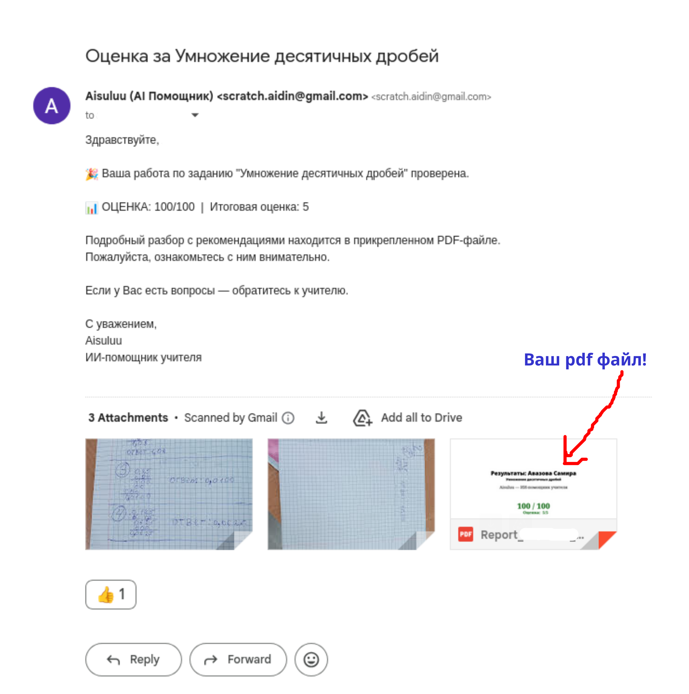

Правила оформления работы для AI-Grader(AIsuluu)
Table of Contents
1. Письменные работы по математике
- Если у вас ещё нет почты Gmail, нужно сначала создать свой аккаунт (адрес вида имя@gmail.com), чтобы можно было отправлять работы через гугл-форму
- Решить эти примеры письменно
- ВАЖНО оформить работу правильно
- Отправить фото через гугл-форму
2. Как правильно оформить работу
- Номер страницы
На каждом листе вверху слева напиши номер: 1, 2, 3… - Часть (секция)
Если начинается новая часть, напиши её название крупно с новой строки: А, Б, … и т.д. - Номер задачи
Каждая задача/пример начинается с номера: 1, 2, 3 В каждой новой части(секции) нумерация начинается снова с 1. Номер задачи обведи кружком. - Линия после задачи
После каждой задачи проведи прямую линию от края до края (по всей ширине). - Ответ
Финальный ответ пиши так: Ответ: … - Порядок
Решай задачи по порядку сверху вниз. Нельзя сначала решить 3, а потом дописывать 1 где-то сбоку или на полях. - Если ошибся
Ошибка — зачеркни одной линией и рядом напиши правильно. Не закрашивай и не замазывай. - Чем писать
Пиши чёрной или тёмно-синей ручкой. Карандашом нельзя. - Фото работы
Один лист — одно фото. Фото делай вертикально, чтобы весь лист был виден, свет хороший, без теней. - Если не знаешь как решать
Напиши “??”
3. Примеры правильно оформленных работ

Figure 1: Правильно оформлена и снята

Figure 2: Правильно оформлена и снята

Figure 3: Правильно оформлена и снята
4. Примеры неправильно оформленных работ

Figure 4: Неправильно оформлена и снята

Figure 5: одна страница(лист) - одно фото

Figure 6: Фото должно быть вертикальным, чтобы весь лист был виден, свет хороший, без теней.
5. Демонстрации
- Видео: как заполнить гугл-форму
6. Пример ответного письма с вашими результатами(на gmail) и файлом обратной связи (pdf файл)
